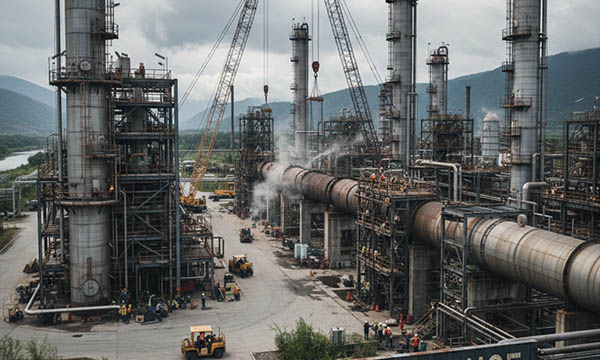

Industrial maintenance is a cornerstone of safe, efficient, and reliable operations in factories, processing plants, and production facilities across Germany, France, Italy, Switzerland, the United Kingdom, Norway, Austria, Poland, and the Benelux countries (Belgium, Netherlands, Luxembourg). Maintaining machinery, electrical installations, pipe systems, and other critical components ensures uninterrupted production, reduces downtime, and protects both personnel and equipment. Clear labeling of pipes, machines, electrical panels, and other industrial assets is essential for operational control, safety compliance, and streamlined maintenance procedures.
Maintenance environments are often complex and demanding, exposing equipment and staff to mechanical stress, high temperatures, moisture, chemicals, vibrations, and dust. In such conditions, proper signage, engraved labels, pipe marking systems, cable markers, type plates, machine identification plates, safety decals, and asset tags are not optional—they are a necessity. Durable and clear labeling ensures that maintenance teams can quickly locate components, understand system flows, and access safety information, even under extreme industrial stress.
At SignXpert, we provide robust, fully customizable industrial signage and labeling solutions specifically designed for maintenance-intensive environments in Germany and throughout Europe. Our products are engineered to withstand harsh conditions while maintaining visibility, compliance with EU regulations, and long-term durability.
Maintenance in Industrial Environments: Investing in Safety and Productivity.
Industrial maintenance is more than routine inspections—it is a strategic investment in operational safety, efficiency, and cost reduction. Through structured maintenance programs, facilities in Germany, France, Italy, Switzerland, the UK, Norway, Austria, Poland, and the Benelux region can prevent unplanned downtime, identify potential equipment failures early, and optimize machinery performance.
Proper labeling of pipes, electrical wiring, machines, and safety zones is a critical part of this process. Clear and durable identification of components allows maintenance personnel to quickly understand flow directions, system contents, and hazard classifications. This reduces the risk of accidents, operational errors, and equipment damage. Well-labeled systems also support emergency interventions and safety audits, ensuring regulatory compliance and safeguarding employees.
SignXpert's labeling solutions are designed for efficiency: engraved plates, industrial type plates, cable markers, pipe labels, machine labels, and QR code tracking plates streamline maintenance workflows and improve operational transparency across all industrial environments.
Clear Labeling of Pipes and Components: Enhancing Safety in Industry.
Safety in industrial maintenance depends on immediate clarity. Pipes, valves, electrical installations, and machines must be clearly marked to indicate flow direction, contents, pressure levels, and hazard classifications. This is especially critical in sectors handling chemicals, high-voltage systems, or pressurized media.
Durable safety decals, engraved industrial plates, stainless steel or anodized aluminum type plates, and high-contrast labeling allow maintenance staff to make rapid, informed decisions, preventing accidents and minimizing downtime. A structured labeling system also improves workflow organization, simplifies inspections, and supports adherence to EU occupational safety standards.
Across Germany, France, Italy, Switzerland, the United Kingdom, Norway, Austria, Poland, and the Benelux countries, high-quality labeling is a prerequisite for safe, compliant, and efficient industrial operations. SignXpert ensures that all markings remain legible even under dust, moisture, vibration, and extreme temperatures.
Long-Term Maintenance: Sustainability, Efficiency, and Reliability.
Long-term industrial maintenance requires a systematic approach that combines equipment care with clear component labeling. Proper labeling allows staff to locate machines, pipes, and electrical panels quickly, reducing service time and operational disruptions. By investing in durable industrial signage and labeling, companies extend equipment lifespan, reduce repair costs, and maintain continuous production.
In complex industrial facilities in Germany, Polish energy plants, Norwegian manufacturing sites, Austrian airline operations, and Benelux processing hubs, structured labeling supports organized maintenance schedules, minimizes operational errors, and optimizes workforce efficiency. Engraved machine plates, asset tags, pipe marking labels, and QR code systems make it easier to track and manage all components.
SignXpert provides solutions that combine mechanical strength, corrosion resistance, UV protection, and high readability, ensuring that maintenance labeling remains effective for years.
Why SignXpert is the Trusted Partner for Industrial Maintenance Labeling in Germany and Europe.
SignXpert is a leading supplier of industrial signage, engraved plates, machine labels, pipe markers, cable identification systems, safety decals, QR code plates, type plates, industrial plates, asset tags, and CE marking solutions for maintenance-intensive operations.
Our primary focus is Germany, with fast and reliable delivery across France, Italy, Switzerland, the United Kingdom, Norway, Austria, Poland, and the Benelux countries. Using our user-friendly online platform, industrial companies can easily customize labeling for pipes, machines, electrical systems, safety zones, and workflow management. Fast production times and durable, compliant products ensure uninterrupted operation even in the most demanding industrial conditions.
By choosing SignXpert, companies secure high-performance industrial labeling that enhances safety, simplifies maintenance, improves operational efficiency, and supports sustainable, well-organized industrial operations across Europe.